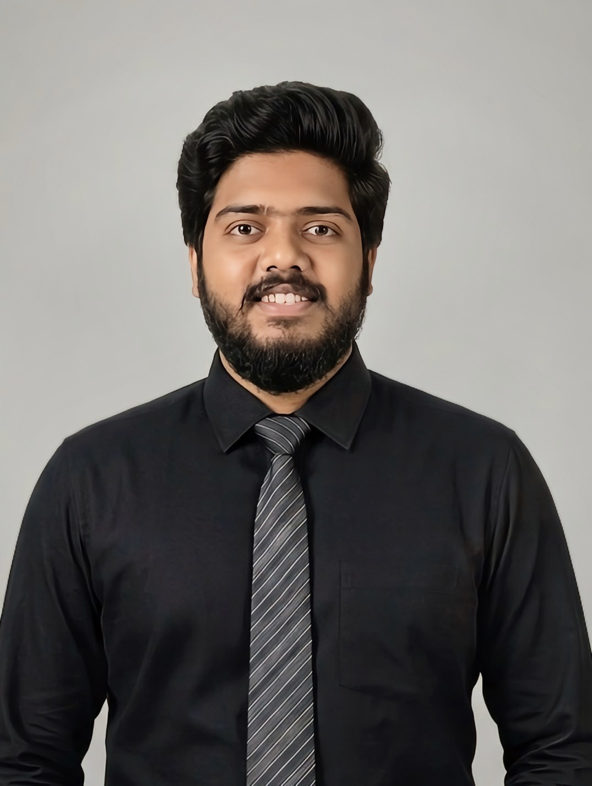

Specializing in VLSI design, semiconductor technology, and low-power digital systems. Actively developing high-efficiency computing architectures and integrating emerging nano-devices for next-generation systems.

Designed an energy-efficient ALU by combining traditional CMOS circuits with memristor elements using the VTEAM model. Developed low-power reversible logic gates (Feynman and Fredkin) to mitigate data loss and power dissipation during high-speed arithmetic computations.
Co-authored and presented research on next-generation computing elements at the QPAIN 2026 conference, exploring low-power, non-volatile logic structures under professional academic mentorship.
Engineered and verified a complete 8-bit digital processing block. Performed full layout capture and handled layout verification rules including strict DRC (Design Rule Checking) and LVS (Layout Versus Schematic) error tracking.
A highly consistent tracking record across core electronics circuits and semiconductor subjects.
Major in electronics and semiconductor tracks. Completed a comprehensive engineering syllabus focusing on digital logic design, VLSI systems, and nanotechnology architectures.
Completed higher secondary education with a rigorous focus on Mathematics, Physics, and Chemistry, establishing the analytical foundation for core engineering studies.
Achieved foundational secondary school certification with specialization in general science, advanced mathematics, and basic physics principles.
Have a research collaboration, graduate school opportunity, or project inquiry? Drop a message below.